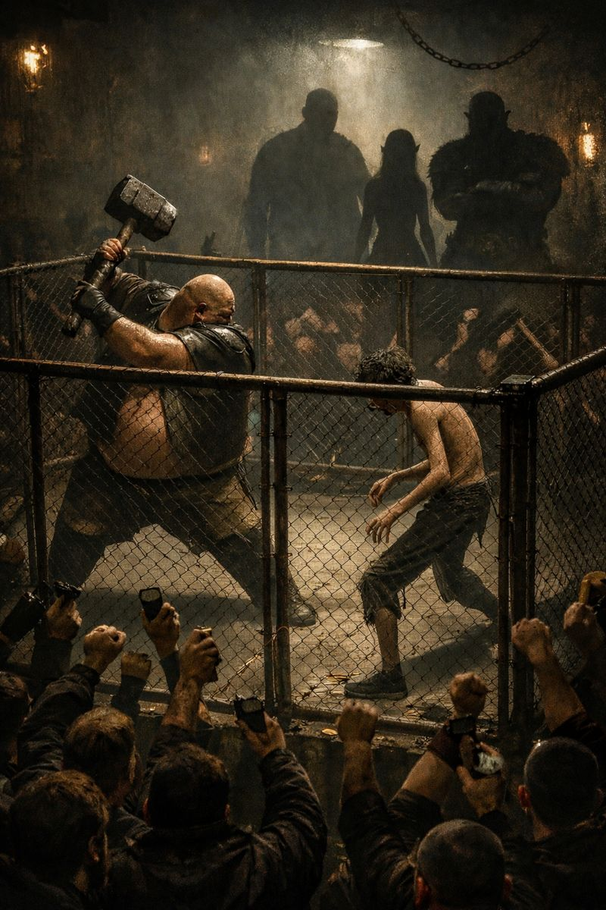

La fossa di Ferro 01.02.26
Il cielo sopra Necromunda è sereno, stanotte. Una leggera brezza s’infrange negli spigoli dei vicoli e delle viuzze dei bassifondi, con un lamento lieve e mormorato, mentre la luna decide di mostrare solo metà del suo volto, come a voler illuminare non tutto ciò che si deve vedere, lasciando al buio i suoi misteri. Poche case hanno luci accese in questa parte della città, e nessuno sosta per strada, a parte qualche figura ammantata che lesta si fa scudo nelle ombre. Solo una porta sembra dare nell’occhio: è dipinta di nero con gli stipiti rossi, e lì accanto siede su uno sgabello sghembo quello che sembra un mendicante, avvolto in stracci.
21:59 Mirodek
Mirodek  [Zona Bassifondi] [L'uomo sbraita a bassa voce mentre vira bruscamente verso un altro vicoletto avvolto nell'oscurità più totale, dove l'unico rumore è lo schiocco sordo degli zoccoli sul pavimento fangoso.] Tu non ti ricordi la strada, ne sono convinto... Non ci sono troppe luci qui. [Controlla il cavallo con una presa d'acciaio sulle briglie, mantenendo un trotto costante nonostante l'assenza di illuminazione, mentre i suoi sensi si tendono al massimo per percepire ogni minimo movimento tra le ombre. Lancia rapide occhiate intorno a sé, scrutando le sagome e le case, finché non cade in un silenzio carico di attesa. Dopo un istante, il carnefice scorge finalmente un dettaglio familiare tra le travi di legno, gli stipiti rossi.] Forse ci siamo, che culo aggiungerei.
[Zona Bassifondi] [L'uomo sbraita a bassa voce mentre vira bruscamente verso un altro vicoletto avvolto nell'oscurità più totale, dove l'unico rumore è lo schiocco sordo degli zoccoli sul pavimento fangoso.] Tu non ti ricordi la strada, ne sono convinto... Non ci sono troppe luci qui. [Controlla il cavallo con una presa d'acciaio sulle briglie, mantenendo un trotto costante nonostante l'assenza di illuminazione, mentre i suoi sensi si tendono al massimo per percepire ogni minimo movimento tra le ombre. Lancia rapide occhiate intorno a sé, scrutando le sagome e le case, finché non cade in un silenzio carico di attesa. Dopo un istante, il carnefice scorge finalmente un dettaglio familiare tra le travi di legno, gli stipiti rossi.] Forse ci siamo, che culo aggiungerei.
Mirodek [Zona Bassifondi] [L'uomo sbraita a bassa voce mentre vira bruscamente verso un altro vicoletto avvolto nell'oscurità più totale, dove l'unico rumore è lo schiocco sordo degli zoccoli sul pavimento fangoso.] Tu non ti ricordi la strada, ne sono convinto... Non ci sono troppe luci qui. [Controlla il cavallo con una presa d'acciaio sulle briglie, mantenendo un trotto costante nonostante l'assenza di illuminazione, mentre i suoi sensi si tendono al massimo per percepire ogni minimo movimento tra le ombre. Lancia rapide occhiate intorno a sé, scrutando le sagome e le case, finché non cade in un silenzio carico di attesa. Dopo un istante, il carnefice scorge finalmente un dettaglio familiare tra le travi di legno, gli stipiti rossi.] Forse ci siamo, che culo aggiungerei.22:02 Maseeri
Maseeri  [bassifondi] mmmh sì la porta è quella [socchiude gli occhi e annuisce] lasciamolo qua il cavallo, meglio arrivare a piedi [suggerisce prudente mentre si stringe il mantello e mormora qualcosa a bassissima voce, qualcosa che ha a che fare con l’Infranta e che non sembra esattamente una preghiera]
[bassifondi] mmmh sì la porta è quella [socchiude gli occhi e annuisce] lasciamolo qua il cavallo, meglio arrivare a piedi [suggerisce prudente mentre si stringe il mantello e mormora qualcosa a bassissima voce, qualcosa che ha a che fare con l’Infranta e che non sembra esattamente una preghiera]
Maseeri [bassifondi] mmmh sì la porta è quella [socchiude gli occhi e annuisce] lasciamolo qua il cavallo, meglio arrivare a piedi [suggerisce prudente mentre si stringe il mantello e mormora qualcosa a bassissima voce, qualcosa che ha a che fare con l’Infranta e che non sembra esattamente una preghiera]Mentre il due arrivano a cavallo e scorgono la porta, un alito di vento fa tremare le poche fiaccole lì attorno. Il vecchio mendicante, lentamente, alza lo sguardo. Porta al collo una catena di anelli pesanti, che sembrano forgiati con scarsa maestria. Poggia le mani nodose sul grembo, come se chiedesse una sorta di elemosina. O forse un obolo per qualcosa di ben diverso, per coloro che sanno. Sembra attenderli.
22:11Mirodek [Zona Bassifondi] [L'uomo tira con forza le briglie verso di sé, costringendo il destriero a un arresto brusco proprio al limitare dell'ingresso] Guarda in che guaio mi hai cacciato [Sfoggia un sorriso strafottente e verace, quel tipo di espressione che usa solitamente quando la fortuna gli volta le spalle ma lui sente di avere ancora un asso nella manica. Accenna con un movimento secco del capo verso una figura immobile che attende nell'ombra] Scendi e vedi quello che vuole [Mentre resta immobile in sella, una folata di vento gelido che sale nel vicolo gli scombina i capelli fulvi, ma lo sguardo del rosso rimane fisso su quel mendicante]
Mirodek [Zona Bassifondi] [L'uomo tira con forza le briglie verso di sé, costringendo il destriero a un arresto brusco proprio al limitare dell'ingresso] Guarda in che guaio mi hai cacciato [Sfoggia un sorriso strafottente e verace, quel tipo di espressione che usa solitamente quando la fortuna gli volta le spalle ma lui sente di avere ancora un asso nella manica. Accenna con un movimento secco del capo verso una figura immobile che attende nell'ombra] Scendi e vedi quello che vuole [Mentre resta immobile in sella, una folata di vento gelido che sale nel vicolo gli scombina i capelli fulvi, ma lo sguardo del rosso rimane fisso su quel mendicante]22:14Maseeri [bassifondi][scivola giù dal cavallo borbottando un laconico] …sì signore [poi si avvia alla porta masticando parole che si possono sentire solo nelle peggiori taverne di Boa Morte] se non ci ammazzano stasera io un pugno su quella faccia strafottente glielo tiro [borbotta avvicinandosi all’uomo] potete indicarmi la strada buon uomo? [domanda laconica tenendosi a un paio di metri da lui e facendo in modo che il suo viso rimanga alla luce, ben visibile]
Maseeri [bassifondi][scivola giù dal cavallo borbottando un laconico] …sì signore [poi si avvia alla porta masticando parole che si possono sentire solo nelle peggiori taverne di Boa Morte] se non ci ammazzano stasera io un pugno su quella faccia strafottente glielo tiro [borbotta avvicinandosi all’uomo] potete indicarmi la strada buon uomo? [domanda laconica tenendosi a un paio di metri da lui e facendo in modo che il suo viso rimanga alla luce, ben visibile]Il mendicante alza lo sguardo su Maseeri, sorridendole senza alcun dente. Le mani raggrinzite ed ossute rimangono in grembo, mentre i suoi pochi capelli lunghi e bianchi, sottili come ragnatele, oscillano in avanti mentre si sporge verso di lei. “Moneta o scommessa, mia signora?” La voce è gracchiante, come qualcosa di affilato che strida su una parete di pietra.
22:20Mirodek [Zona Bassifondi] [L'uomo scende da cavallo con un tonfo sordo e pesante che risuona chiaramente tra le mura dei vicoli, rivelando tutta l'imponenza della sua stazza. È un colosso di quasi due metri, un ammasso di muscoli e nervi che sembra riempire da solo lo spazio del vicolo. Si sofferma un istante accanto al destriero, passandogli una mano callosa sul muso con una dolcezza inaspettata che contrasta con la sua figura massiccia.] Tu resta qua. Prima o poi ti riporterò dal tuo padrone. [Abbandona l'animale e raggiunge l'elfa con passi lenti e deliberati, torreggiando alle sue spalle come un'ombra protettiva. Il suo sguardo chiaro punta dritto all'uomo, analizzandolo con la freddezza di chi ha visto troppe battaglie e poche ragioni per fidarsi di un mendicante nel cuore della notte. Si posiziona accanto a Maseeri, incrociando le braccia sul petto mentre il mantello nero si apre leggermente rivelando la sua presenza.] Allora? Che vuole?
Mirodek [Zona Bassifondi] [L'uomo scende da cavallo con un tonfo sordo e pesante che risuona chiaramente tra le mura dei vicoli, rivelando tutta l'imponenza della sua stazza. È un colosso di quasi due metri, un ammasso di muscoli e nervi che sembra riempire da solo lo spazio del vicolo. Si sofferma un istante accanto al destriero, passandogli una mano callosa sul muso con una dolcezza inaspettata che contrasta con la sua figura massiccia.] Tu resta qua. Prima o poi ti riporterò dal tuo padrone. [Abbandona l'animale e raggiunge l'elfa con passi lenti e deliberati, torreggiando alle sue spalle come un'ombra protettiva. Il suo sguardo chiaro punta dritto all'uomo, analizzandolo con la freddezza di chi ha visto troppe battaglie e poche ragioni per fidarsi di un mendicante nel cuore della notte. Si posiziona accanto a Maseeri, incrociando le braccia sul petto mentre il mantello nero si apre leggermente rivelando la sua presenza.] Allora? Che vuole?22:23Maseeri [bassifondi] lui niente sono io che cerco qualcuno [torna al mendicante] quanto per sapere dov’è Reg? [domanda pratica poi si volta verso il rosso e gli mormora piano] prega il tuo dio che sia un prezzo ragionevole o dovremo scommettere e NON voglio scommettere [lo fissa con uno sguardo tagliente etorna a guardare l’omino]
Maseeri [bassifondi] lui niente sono io che cerco qualcuno [torna al mendicante] quanto per sapere dov’è Reg? [domanda pratica poi si volta verso il rosso e gli mormora piano] prega il tuo dio che sia un prezzo ragionevole o dovremo scommettere e NON voglio scommettere [lo fissa con uno sguardo tagliente etorna a guardare l’omino]Il vecchio allarga lo sguardo, puntandolo sull’energumeno col mantello nero. Non fa una piega, nonostante ci sia un abisso fra i due. Si rivolge a Maseeri, chinando il capo. “Niente, Mia Signora, perchè evidentemente già sapete.” Dice lentamente, mentre le labbra si inumidiscono nel parlare per la mancanza dei denti. Allunga il braccio destro e nodoso fino all’uscio, e batte tre colpi. Poi due. Poi quattro. La porta viene aperta dall’interno con uno scricchiolio ed il rumore di un chiavistello che viene girato. Un bambino scalzo e magro compare oltre la soglia, dietro di lui potete vedere la stanza, modesta e mal arredata, illuminata da qualche lanterna. Si sente puzza di legno marcio e di escrementi di topo. Il bambino vi lascia l’ingresso libero, senza dire una parola, indicandovi un angolo della stanza, dove da sotto un tappeto lacero che è stato scostato, s’intravede una botola aperta, con delle scale che scendono verso il basso.
22:35Mirodek [Zona Bassifondi] Reg carissimo amico mio [Si strofina le mani con un'energia nervosa, trasalendo appena quando il movimento fa pressione sul dito ancora storto e dolente che ricorda la violenza della Fossa] alle scommesse ci penso io fidati di me [Lo dice con una serietà assoluta e priva di qualsiasi amor proprio, rivelando quella brama per il gioco che gli scorre nel sangue come un riflesso incondizionato e incurabile] Come fa a parlare senza un dente in bocca [Sussurra il pensiero all'orecchio di Maseeri con un sospiro divertito mentre osserva i battenti della porta aprirsi in sincronia con i rintocchi dell’uomo. Viene investito da un fetore nauseabondo e stagnante, mentre il suo sguardo cerca di penetrare l’interno della sala] Prima le signore [Accompagna le parole aprendo la mano destra deformata in un gesto di ironica galanteria per favorire l'ingresso dell'elfa nell'edificio]
Mirodek [Zona Bassifondi] Reg carissimo amico mio [Si strofina le mani con un'energia nervosa, trasalendo appena quando il movimento fa pressione sul dito ancora storto e dolente che ricorda la violenza della Fossa] alle scommesse ci penso io fidati di me [Lo dice con una serietà assoluta e priva di qualsiasi amor proprio, rivelando quella brama per il gioco che gli scorre nel sangue come un riflesso incondizionato e incurabile] Come fa a parlare senza un dente in bocca [Sussurra il pensiero all'orecchio di Maseeri con un sospiro divertito mentre osserva i battenti della porta aprirsi in sincronia con i rintocchi dell’uomo. Viene investito da un fetore nauseabondo e stagnante, mentre il suo sguardo cerca di penetrare l’interno della sala] Prima le signore [Accompagna le parole aprendo la mano destra deformata in un gesto di ironica galanteria per favorire l'ingresso dell'elfa nell'edificio]22:40Maseeri [fossa di ferro] [sfila oltre la porta posando gli occhi sul ragazzino, aggrotta appena la fronte come a volerne ricordare le fattezze arriccia il naso mentre ascolta il commento sul mendicante, per un istante un lampo di divertimento le attraversa gli occhi verdi, ma è un istante poi vede la botola, sentendo le altre parole del rosso sospira e si appresta a scendere le scale, dopo il primo scalino si volta e gli punta un dito sul petto, dal basso all’alto] cerchiamo di capirci tu non pensi a nessuna scommessa anzi tu non pensi e basta, ascolti, registri, e ci fai uscire vivi di qua, punto. [di volta, scende un secondo scalino poi si rivolta] ah,.. il “prima le signore” me lo ricorderò [gli schiocca un’occhiata furente e finalmente si decide, raccolto il coraggio a scendere le scale]
Maseeri [fossa di ferro] [sfila oltre la porta posando gli occhi sul ragazzino, aggrotta appena la fronte come a volerne ricordare le fattezze arriccia il naso mentre ascolta il commento sul mendicante, per un istante un lampo di divertimento le attraversa gli occhi verdi, ma è un istante poi vede la botola, sentendo le altre parole del rosso sospira e si appresta a scendere le scale, dopo il primo scalino si volta e gli punta un dito sul petto, dal basso all’alto] cerchiamo di capirci tu non pensi a nessuna scommessa anzi tu non pensi e basta, ascolti, registri, e ci fai uscire vivi di qua, punto. [di volta, scende un secondo scalino poi si rivolta] ah,.. il “prima le signore” me lo ricorderò [gli schiocca un’occhiata furente e finalmente si decide, raccolto il coraggio a scendere le scale]Le scale vi portano in un posto che non faticate a riconoscere. Alla fine dei gradini si apre uno scantinato umido e ampio, illuminato da file e file di lanterne che sono ammassate alle pareti senza finestre, ed alcune pendono dal soffitto. All’odore di muffa ed escrementi si aggiunge quello acre del sudore e quello dolciastro del sangue. Nuvole di fumo da sigaro appestano l’aria e al centro della sala, eccola: la Fossa di Ferro. Una gabbia in ferro mal battuto che scende nel cuore dello scantinato, mentre attorno una calca di uomini che sbraitano come belve affamate si sporge per guardare lo spettacolo che la fossa regala. Fra quella calca e quelle urla potete riconoscere chi prende le scommesse, chi le ha perse, e in un angolo, seduto su un divano rosso scuro che ha visto troppi inverni, siede Reg. E’ un uomo alto, ben piazzato, col fisico di chi un tempo doveva essere un gran lottatore. Il peso degli anni gli ha tolto parte dei capelli e aggiunto una pancia, gonfia e tirata su quel fisico che un tempo avrebbe potuto abbracciare un albero e romperne il tronco senza fatica. Ha una cicatrice sopra l’occhio sinistro, e fuma un sigaro puzzolente mentre ride sguaiatamente, mostrando i denti ingialliti dal fumo. Due sgherri stanno ai lati del divano, ridendo con lui, e gridando improperi ai malcapitati finiti nella Fossa.
22:53Mirodek [Fossa di Ferro] [L'uomo supera l'uscio pesantemente, seguendo Maseeri nel silenzio tombale rotto solo dal gocciolio dell'umidità che trasuda dalle pareti. Si infila nella botola subito dopo di lei, ma si ritrova bruscamente bloccato dal dito della donna puntato dritto contro il suo petto massiccio. Resta immobile, ascoltando le sue condizioni con un'espressione di finta innocenza, annuendo con un vigore quasi sospetto mentre sfoggia una faccia da schiaffi che mal si concilia con la sua stazza da gigante.] Non penso, non scommetto e usciamo vivi, chiaro Mase, chiaro [Allarga le braccia in un gesto di totale resa, atteggiandosi a vittima delle circostanze con un sorrisetto che gli danza negli occhi bruni, quasi a voler giurare su una lealtà che il suo istinto da giocatore mette costantemente alla prova.] Sono un galantuomo io [Inizia a scendere i gradini angusti della scala di legno che scricchiola pericolosamente sotto il suo peso. Nonostante la situazione, non disdegna un'occhiata fugace e sfacciata al fondoschiena dell'elfa che lo precede nell'oscurità. Ma improvvisamente l'aria cambia. Un odore ferroso di sangue secco, misto al sudore rancido di centinaia di corpi e alle grida belluine degli scommettitori, risale dal basso come un’onda d’urto che lo paralizza a metà della discesa.] Cazzo è la Fossa di Ferro [deglutisce e continua]
Mirodek [Fossa di Ferro] [L'uomo supera l'uscio pesantemente, seguendo Maseeri nel silenzio tombale rotto solo dal gocciolio dell'umidità che trasuda dalle pareti. Si infila nella botola subito dopo di lei, ma si ritrova bruscamente bloccato dal dito della donna puntato dritto contro il suo petto massiccio. Resta immobile, ascoltando le sue condizioni con un'espressione di finta innocenza, annuendo con un vigore quasi sospetto mentre sfoggia una faccia da schiaffi che mal si concilia con la sua stazza da gigante.] Non penso, non scommetto e usciamo vivi, chiaro Mase, chiaro [Allarga le braccia in un gesto di totale resa, atteggiandosi a vittima delle circostanze con un sorrisetto che gli danza negli occhi bruni, quasi a voler giurare su una lealtà che il suo istinto da giocatore mette costantemente alla prova.] Sono un galantuomo io [Inizia a scendere i gradini angusti della scala di legno che scricchiola pericolosamente sotto il suo peso. Nonostante la situazione, non disdegna un'occhiata fugace e sfacciata al fondoschiena dell'elfa che lo precede nell'oscurità. Ma improvvisamente l'aria cambia. Un odore ferroso di sangue secco, misto al sudore rancido di centinaia di corpi e alle grida belluine degli scommettitori, risale dal basso come un’onda d’urto che lo paralizza a metà della discesa.] Cazzo è la Fossa di Ferro [deglutisce e continua]22:57Maseeri [fossa di ferro] si Miro e io sono la signora Oscura [ribatte raggiungendo lo scantinato poi si volta e lo fissa] non te l’avevo detto? Devo fare una cosa qui e ce ne andiamo, dicevo seriamente, mi sono dovuta impegnare con Reg per.. [si zittisce con l’aria di una che ha parlato troppo e gli volta le spalle puntando direttamente il divano sgualcito] …come da accordi [dice a mo’ di saluto al Re della Fossa]
Maseeri [fossa di ferro] si Miro e io sono la signora Oscura [ribatte raggiungendo lo scantinato poi si volta e lo fissa] non te l’avevo detto? Devo fare una cosa qui e ce ne andiamo, dicevo seriamente, mi sono dovuta impegnare con Reg per.. [si zittisce con l’aria di una che ha parlato troppo e gli volta le spalle puntando direttamente il divano sgualcito] …come da accordi [dice a mo’ di saluto al Re della Fossa]Il frastuono non s’interrompe, nessuno bada ai nuovi arrivati: la sete di sangue e di scommesse tiene tutti piuttosto impegnati. All’interno della fossa, due uomini sono agli angoli opposti della gabbia. Sembrano studiarsi. Uno è calvo ed enorme, grasso e pesante e al posto della mano destra ha una specie di martello incastonato nel polso monco. E’ sudato e lucido, sta studiando l’avversario, un ragazzo giovane e smilzo, con lo sguardo assente e le mani in tasca dei pantaloni logori. Il pubblico sembra in delirio. Dal divano, Reg è l’unico che nota il vostro ingresso, e spostando con la lingua il sigaro da un angolo all’altro delle labbra sottili, batte le mani grandi e callose rumorosamente. “Treccine, vedo che sei stata di parola.” Il suo ghigno è irriverente e fastidioso. Spudorato. Si alza dal divano e sembra cercare qualcuno oltre Maseeri: “E il tuo Stallone da combattimento? Come sta? Per caso gli mancavo?” Un’altra risata, grassa e roca, mentre tossisce un po’ di fumo.
23:07Mirodek [Fossa di Ferro] [Il cuore dell'uomo inizia uno strano gioco nel petto alternando ansia ferocia e una bruciante voglia di rivincita che lo fanno battere come un tamburo da guerra suonato da un folle. Segue Maseeri con la mascella serrata mentre il naso inspira involontariamente quel putridume che ha dovuto respirare per mesi tra le pareti di quella prigione. Davanti a lui si staglia la Fossa di Ferro il suo personale angolo di inferno sulla terra. Tiene il cappuccio del mantello nero calato sul volto per evitare di essere riconosciuto da qualche scommettitore troppo accanito. Alle parole della donna non aggiunge nulla ma il suo sguardo rivela che ha già intuito la gravità della situazione. Interviene subito quando sente la voce di Reg volgendosi verso di lui con un'espressione carica di amara ironia.] Amico mio sto benissimo [Accompagna le parole sollevando il dito medio in un gesto d'istinto ma si corregge “quasi” subito mostrando invece l'indice ancora dolorosamente storto a causa dei combattimenti. Abbozza un mezzo sorriso sbilenco che non promette nulla di buono e non aggiunge altro]
Mirodek [Fossa di Ferro] [Il cuore dell'uomo inizia uno strano gioco nel petto alternando ansia ferocia e una bruciante voglia di rivincita che lo fanno battere come un tamburo da guerra suonato da un folle. Segue Maseeri con la mascella serrata mentre il naso inspira involontariamente quel putridume che ha dovuto respirare per mesi tra le pareti di quella prigione. Davanti a lui si staglia la Fossa di Ferro il suo personale angolo di inferno sulla terra. Tiene il cappuccio del mantello nero calato sul volto per evitare di essere riconosciuto da qualche scommettitore troppo accanito. Alle parole della donna non aggiunge nulla ma il suo sguardo rivela che ha già intuito la gravità della situazione. Interviene subito quando sente la voce di Reg volgendosi verso di lui con un'espressione carica di amara ironia.] Amico mio sto benissimo [Accompagna le parole sollevando il dito medio in un gesto d'istinto ma si corregge “quasi” subito mostrando invece l'indice ancora dolorosamente storto a causa dei combattimenti. Abbozza un mezzo sorriso sbilenco che non promette nulla di buono e non aggiunge altro]23:12Maseeri [fossa di ferro] [piega la testa di lato e sorride placida] lo stallone da combattimento sta benissimo dove sta [sorride mentre una mano si appoggia causalmente sull’avambraccio di Mirodek e lo stringe appena] e io e te abbiamo un accordo [una seconda stretta leggermente più lunga al braccio del rosso prima di ritirare la mano] sono venuta come da accordi [sorride lieve e si guarda intorno [chi devo tenere in vita stasera? [lo sguardo apatico scivola sulla folla di scommettitori e sui combattenti senza lasciar trasparire alcunchè]
Maseeri [fossa di ferro] [piega la testa di lato e sorride placida] lo stallone da combattimento sta benissimo dove sta [sorride mentre una mano si appoggia causalmente sull’avambraccio di Mirodek e lo stringe appena] e io e te abbiamo un accordo [una seconda stretta leggermente più lunga al braccio del rosso prima di ritirare la mano] sono venuta come da accordi [sorride lieve e si guarda intorno [chi devo tenere in vita stasera? [lo sguardo apatico scivola sulla folla di scommettitori e sui combattenti senza lasciar trasparire alcunchè]Alle parole di Mirodek, Reg sembra compiaciuto. Si toglie di bocca il sigaro con la mancina, mostrando l’anulare amputato. “E’ come per i cani, non è vero?” Domanda al Rosso. “Una volta sentito il sapore del sangue è difficile farne a meno.” I suoi occhi sono scuri, furbi e pungenti. Fatsidiosi. Poi torna su Maseeri. “Spero che tu sappia far meglio di quel dito ancora storto, non può nemmeno insultarmi a dovere, deve sentirsi uno straccio” commenta. Poi tira una lunga boccata al sigaro, che sbuffa in aria facendone espandere il tanfo. “Dipende. Guarda nella Fossa. Quello che mi crepa o quasi, dovrai ritirarlo su.” Indica col mento spigoloso la gabbia, dove i due sfidanti si stanno ancora studiando. Reg fa da cicerone, iniziando a spiegare “Lo vedi quel ciccione maledetto? Bonn man di martello. E direi che si capisca il perchè.” Sorride, sardonico. “Mi fa vincere sempre un sacco di soldi, a palate. Ma stasera è contro Lenny lo Smilzo. Quel ragazzino sudicio pelle e ossa. Mai visto combattere, è arrivato da poco.” Con un cenno della mano, li invita ad avvicinarsi alla Fossa, per assistere allo scontro. “Sentiamo: secondo te chi dovrai rattopparmi?” Poi si rivolge a Mirodek “O vuoi scendere tu al posto di uno dei due?” E ride, di nuovo.
23:28Mirodek [Fossa di Ferro] [L'uomo osserva la Fossa in una sorta di trance ipnotica mentre flashback violenti e scatti di immagini cruente gli annebbiano la mente facendogli rivivere il freddo delle catene. Solo quando sente la pressione decisa e calda di Maseeri sul suo avambraccio i pensieri oscuri vengono sradicati riportandolo alla realtà di quel lerciume e all'attenzione dovuta a Reg. Capisce lucidamente che non è il momento di agire né di reagire ma le sue mani nervose si stringono in un pugno carico di una ferocia repressa che fa scricchiolare le nocche.] Se fosse stato per il sangue, sarei rimasto volentieri ma, non avrei potuto sopportare ancora la vista di quei denti gialli, amico mio. [Si avvicina lentamente al bordo della Fossa studiando i movimenti dei lottatori con l'attenzione clinica di chi ha scommesso la propria vita su quel fango troppe volte. Un bisbiglio quasi impercettibile gli scivola tra le labbra mentre il suo istinto da scommettitore prende il sopravvento nella solitudine della sua testa. Infila una mano nella tasca del cappotto scuro afferrando un sigarello che porta alla bocca con un gesto meccanico e sfrontato.] Lenny l'incontro lo vince Lenny [lo dice tra se e se] ti ho dato più di cinquanta vittorie di fila, fai divertire i ragazzi adesso. [Fa una pausa, per poi continuare] Fammi accendere zio Reg [Si china verso l'uomo accorciando le distanze con un movimento calmo e minaccioso al tempo stesso offrendo la punta del tabacco.]
Mirodek [Fossa di Ferro] [L'uomo osserva la Fossa in una sorta di trance ipnotica mentre flashback violenti e scatti di immagini cruente gli annebbiano la mente facendogli rivivere il freddo delle catene. Solo quando sente la pressione decisa e calda di Maseeri sul suo avambraccio i pensieri oscuri vengono sradicati riportandolo alla realtà di quel lerciume e all'attenzione dovuta a Reg. Capisce lucidamente che non è il momento di agire né di reagire ma le sue mani nervose si stringono in un pugno carico di una ferocia repressa che fa scricchiolare le nocche.] Se fosse stato per il sangue, sarei rimasto volentieri ma, non avrei potuto sopportare ancora la vista di quei denti gialli, amico mio. [Si avvicina lentamente al bordo della Fossa studiando i movimenti dei lottatori con l'attenzione clinica di chi ha scommesso la propria vita su quel fango troppe volte. Un bisbiglio quasi impercettibile gli scivola tra le labbra mentre il suo istinto da scommettitore prende il sopravvento nella solitudine della sua testa. Infila una mano nella tasca del cappotto scuro afferrando un sigarello che porta alla bocca con un gesto meccanico e sfrontato.] Lenny l'incontro lo vince Lenny [lo dice tra se e se] ti ho dato più di cinquanta vittorie di fila, fai divertire i ragazzi adesso. [Fa una pausa, per poi continuare] Fammi accendere zio Reg [Si china verso l'uomo accorciando le distanze con un movimento calmo e minaccioso al tempo stesso offrendo la punta del tabacco.]23:32Maseeri [fossa di ferro] ha pur sempre l’altra mano [risponde laconica sorridendo a Reg poi si fissa sui due contendenti e si prende il tempo per osservarli, si sofferma sul ragazzino e chiede] come hai scelto proprio sudicino? [sembra interessata allo smilzo, lancia un’occhiata a Miro] ci sono delle specie di selezioni? [chiede prima di ripuntare gli occhi sui due fissandoli su Lenny, annuisce] sì direi il pancione, curerò il pancione
Maseeri [fossa di ferro] ha pur sempre l’altra mano [risponde laconica sorridendo a Reg poi si fissa sui due contendenti e si prende il tempo per osservarli, si sofferma sul ragazzino e chiede] come hai scelto proprio sudicino? [sembra interessata allo smilzo, lancia un’occhiata a Miro] ci sono delle specie di selezioni? [chiede prima di ripuntare gli occhi sui due fissandoli su Lenny, annuisce] sì direi il pancione, curerò il pancione“Sono affezionato ai miei denti gialli, Stallone. Gialli come l’oro, porta bene. Smettila di fumare quella schifezza, o creperai male” lo apostrofa poi, e si sfila dalla tasca affatto sporca, forse l’unica tasca pulita di tutta la sala, un sigaro di ottima fattura. Il profumo delle foglie di tabacco è pungente e di qualità. Lo accende portandolo a combaciare con quello che tiene in bocca, e poi lo passa a Mirodek, come se fossero vecchi amici. Poi ascolta i pronostici. Arriccia le labbra all’ingiù, quasi fosse deluso. “Lenny eh.. voglio proprio vedere cosa s’inventerà, quel lercio figlio d’un’aringa bagnata. Ma se dite così.. Otto!” Grida, all’improvviso. Poco distante un ometto con un taccuino alza lo sguardo, ubbidiente. “Punta mille pezzi su quel rifiuto di fogna in calzoncini!” Poi torna a guardare i due, compiaciuto. “Se mi fate perdere non so se uscirete sulle vostre gambe. Ma come ho sempre detto, la femmina mi sembra furba.” Uno sguardo a Maseeri, dall’alto in basso, e poi con un cenno della mano dà il via al combattimento. “Scannatevi, figli d’un cane! La Fossa vuole il sangue!” Al suo comando, Bonn man di martello si scosta dall’angolo e si dirige verso Lenny, caricando un colpo con la mano armata. Lenny dal canto suo, si limita ad osservare il ciccione, poco interessato, le mani ancora in tasca. Il colpo di Bonn cade pesante sulle sbarre della Fossa: lo smilzo si è scansato velocemente, senza quasi far notare il suo movimento. Attorno alla fossa un delirio di urla e fischi riempie l’aria.
23:49Mirodek [Fossa di Ferro] [L'uomo sfila il sigarello dalle labbra e accetta il sigaro di pregio che Reg gli porge con un cenno di intesa. Lo porta alla bocca aspirando il fumo denso a pieni polmoni e per un istante le cicatrici della Fossa e l'odore acre della prigionia sembrano svanire dietro quella coltre aromatica e calda.] Tu sai come spendere i soldi, mi piace. [Quasi dimentica i mesi passati in catene mentre osserva l'arena con l'occhio clinico del veterano. Quando lo smilzo accanto a lui si scansa intimorito, il rosso occupa lo spazio con la sua mole massiccia riportando lo sguardo fisso sull'incontro che si sta svolgendo.] Se ti fidi del primo che entra e ti suggerisce, scommettere non fa per te, zio. [Emette un nuovo sospiro di fumo bianco e denso studiando i movimenti dei lottatori. Osserva Lenny e la determinazione feroce che brilla nei suoi occhi, mentre si avvicina lentamente all'elfa mosso da un impulso che non riesce a controllare del tutto.] Figlio di puttana, uno dallo sguardo spento non può mai perdere. [Le parole gli escono dalle labbra prima che possa fermarle, dettate da quel demone del gioco che gli scorre nelle vene insieme al sangue. Si china leggermente verso di lei mentre il desiderio di puntare tutto su quel lottatore gli incendia la mente, facendogli dimenticare per un istante la missione e il pericolo.] Hai soldi da prestarmi? Lenny non perderà. [Si pente del suggerimento non appena finisce di pronunciarlo. Si ricompone con uno scatto d'orgoglio allontanandosi di qualche passo per tornare a osservare l'arena con una freddezza rinnovata, cercando di soffocare la brama della scommessa che ancora gli fa formicolare le dita.]
Mirodek [Fossa di Ferro] [L'uomo sfila il sigarello dalle labbra e accetta il sigaro di pregio che Reg gli porge con un cenno di intesa. Lo porta alla bocca aspirando il fumo denso a pieni polmoni e per un istante le cicatrici della Fossa e l'odore acre della prigionia sembrano svanire dietro quella coltre aromatica e calda.] Tu sai come spendere i soldi, mi piace. [Quasi dimentica i mesi passati in catene mentre osserva l'arena con l'occhio clinico del veterano. Quando lo smilzo accanto a lui si scansa intimorito, il rosso occupa lo spazio con la sua mole massiccia riportando lo sguardo fisso sull'incontro che si sta svolgendo.] Se ti fidi del primo che entra e ti suggerisce, scommettere non fa per te, zio. [Emette un nuovo sospiro di fumo bianco e denso studiando i movimenti dei lottatori. Osserva Lenny e la determinazione feroce che brilla nei suoi occhi, mentre si avvicina lentamente all'elfa mosso da un impulso che non riesce a controllare del tutto.] Figlio di puttana, uno dallo sguardo spento non può mai perdere. [Le parole gli escono dalle labbra prima che possa fermarle, dettate da quel demone del gioco che gli scorre nelle vene insieme al sangue. Si china leggermente verso di lei mentre il desiderio di puntare tutto su quel lottatore gli incendia la mente, facendogli dimenticare per un istante la missione e il pericolo.] Hai soldi da prestarmi? Lenny non perderà. [Si pente del suggerimento non appena finisce di pronunciarlo. Si ricompone con uno scatto d'orgoglio allontanandosi di qualche passo per tornare a osservare l'arena con una freddezza rinnovata, cercando di soffocare la brama della scommessa che ancora gli fa formicolare le dita.]23:55Maseeri [fossa di ferro] guarda dritto davanti a sé e continua a studiare i due con aria apatica, quando il rosso si china verso di lei sembra non sentirlo, se non per una breve occhiata che gli scocca, come un colpo di frusta, placida si gira verso Reg e sorride innocente] vorrei scommettere [alza la mano, l’indice della mano e continua] una moneta sullo smilzo [sorniona si volta verso il carnefice e commenta, laconica] sarà un brivido molto piccolo, ma è pur meglio di niente [sembra canzonarlo ma fa apparire una moneta dalla mano destra e la porge al re della fossa, come fosse una bambina che compra un dolcetto]
Maseeri [fossa di ferro] guarda dritto davanti a sé e continua a studiare i due con aria apatica, quando il rosso si china verso di lei sembra non sentirlo, se non per una breve occhiata che gli scocca, come un colpo di frusta, placida si gira verso Reg e sorride innocente] vorrei scommettere [alza la mano, l’indice della mano e continua] una moneta sullo smilzo [sorniona si volta verso il carnefice e commenta, laconica] sarà un brivido molto piccolo, ma è pur meglio di niente [sembra canzonarlo ma fa apparire una moneta dalla mano destra e la porge al re della fossa, come fosse una bambina che compra un dolcetto]Una risata di pancia muove la gola avvolta dalla barba ruvida e dall’odore di fumo di Reg. “Ragazzo mio, è proprio perchè mi piace scommettere che ogni tanto faccio qualche cazzata. La fortuna da’ la fortuna toglie.” Si indica con l’indice della mancina l’anulare monco, come a dimostrazione delle sue parole. “Ma quando dormi sulle monete d’oro, ti puoi concedere il lusso di perdere, e anche quello di incazzarti. Poi ti fai una notte sul materasso gonfio d’oro e passa tutto.” Reg lancia un’occhiata alla sfida in corso. Il ciccione è riuscito ad estrarre il martello dalla gabbia di ferro, e si è lanciato a passo pesante e infuriato contro lo smilzo. Grida, sudato e colmo d’istinto omicida. Carica un nuovo colpo, violento e furibondo, ma anche questa volta allo smilzo basta poco e con una schivata si prende gioco di Bronn. Il suo sguardo rimane vuoto, sembra annoiato. Il pubblico s’infiamma, gli insulti e le urla aumentano. L’odore di sudore si fa pungente. Quando Maseeri si rivolge a Reg, l’uomo distoglie lo sguardo dalla lotta. “Una moneta? Siete cauta, Treccine. Ma chi sono io per negarvi questo brivido? Otto, una moneta su Lenny, per la femmina qui!” Raccoglie la moneta dalla barda, falsamente ossequioso, con quel sorriso sghembo e ingiallito sempre presente.
00:05Mirodek [Fossa di Ferro] [L'uomo resta immobile ad osservare l'incontro mentre ogni fase di attacco o difesa gli riporta alla mente i suoi stessi combattimenti passati in quella gabbia. La mano destra risale per un istante fino a toccarsi le costole, un ricordo vivido e doloroso di un colpo ricevuto che lo fa trasalire appena sotto il mantello scuro. Ascolta le parole dell'elfa e un sorriso gli increspa immediatamente le labbra mentre il calore del sigaro gli riempie la gola.] Mi farò bastare questo piccolo brivido. [Sfrega le mani con un'energia nervosa, lasciandosi inondare dal fumo denso del tabacco che sembra cullare i suoi sensi eccitati dalla violenza dell'arena. La sua attenzione resta calamitata dal ring.] Io preferisco dormire con le donne, ho provato con le monete ma non mi eccitano. [Lo dice fissando l'incontro con un moto magnetico e quasi ipnotico mentre la tensione intorno a loro aumenta ad ogni grido della folla inferocita che invoca altro sangue.] LENNY, tutti ti danno per spacciato, butta a terra quel ciccione CAZZO [ormai è andato, in piena trance ludopatica]
Mirodek [Fossa di Ferro] [L'uomo resta immobile ad osservare l'incontro mentre ogni fase di attacco o difesa gli riporta alla mente i suoi stessi combattimenti passati in quella gabbia. La mano destra risale per un istante fino a toccarsi le costole, un ricordo vivido e doloroso di un colpo ricevuto che lo fa trasalire appena sotto il mantello scuro. Ascolta le parole dell'elfa e un sorriso gli increspa immediatamente le labbra mentre il calore del sigaro gli riempie la gola.] Mi farò bastare questo piccolo brivido. [Sfrega le mani con un'energia nervosa, lasciandosi inondare dal fumo denso del tabacco che sembra cullare i suoi sensi eccitati dalla violenza dell'arena. La sua attenzione resta calamitata dal ring.] Io preferisco dormire con le donne, ho provato con le monete ma non mi eccitano. [Lo dice fissando l'incontro con un moto magnetico e quasi ipnotico mentre la tensione intorno a loro aumenta ad ogni grido della folla inferocita che invoca altro sangue.] LENNY, tutti ti danno per spacciato, butta a terra quel ciccione CAZZO [ormai è andato, in piena trance ludopatica]00:14Maseeri [fossa di ferro] paese che vai usanza che trovi [risponde sorridendo al Re della Fossa poi torna a guardare il combattimento assorta, un rapito sguardo al rosso e allunga una mano verso di lui, posandogliela sul braccio, come si appoggiasse, socchiude gli occhi e sembra muovere lentamente le labbra concentrandosi affinchè una sensazione di calore e calma raggiunga il carnefice e calmi la crisi che par averlo colto, gli occhi socchiusi osservano l’arena senza vederla davvero, mentre le urla sguaiate degli scommettitori la cullano in una sorta di trance] [Manipolazione Naturale Corpo 9]
Maseeri [fossa di ferro] paese che vai usanza che trovi [risponde sorridendo al Re della Fossa poi torna a guardare il combattimento assorta, un rapito sguardo al rosso e allunga una mano verso di lui, posandogliela sul braccio, come si appoggiasse, socchiude gli occhi e sembra muovere lentamente le labbra concentrandosi affinchè una sensazione di calore e calma raggiunga il carnefice e calmi la crisi che par averlo colto, gli occhi socchiusi osservano l’arena senza vederla davvero, mentre le urla sguaiate degli scommettitori la cullano in una sorta di trance] [Manipolazione Naturale Corpo 9]Maseeri , tirando i dadi, ha ottenuto un punteggio di 4 su 20
Reg si limita a ridere sguaiatamente alle parole del Rosso, annuendo come se avesse detto una grande perla di saggezza. Poi fissa lo sguardo sul combattimento, anche lui preso dalla brama di veder qualcuno andare al tappeto. Intanto Maseeri tenta di concentrarsi, ma il caos della Fossa è frastornante. Riesce ad evocare un po’ della sua Ars, e Mirodek sentirà il battito del suo cuore calmarsi, come se un abbraccio caldo lo avesse avvolto. Almeno per un attimo. Ma subito dopo, la battaglia infuria: Bonn, madido di sudore e furibondo, decide di caricare lo smilzo come solo un bisonte potrebbe fare. Testa bassa e martello in avanti, la sua corsa è pesante e violenta. Gli spettatori battono le mani al ritmo del suo avvicinarsi al ragazzo con i pantaloncini. Lenny, dal canto suo, sembra distrarsi per un attimo, forse si sofferma a guardare il pubblico in delirio. E in men che non si dica l’altro gli è addosso. Sembra che non ci sia speranza per Lenny: il braccio di Bonn si avvicina alla sua mascella, ma all’ultimo secondo, lo smilzo si abbassa. Fulmineo. Felino. Il braccio col martello si impiglia delle sbarre della gabbia, e il grosso sfidante resta bloccato in preda alla sua furia. In un attimo, Lenny gli è addosso: con un balzo agile gli è saltato sul groppone sudato, e apre la bocca. Forse ride, non si capisce bene, ma qualcosa di strano si nota quando le fiaccole si riflettono sui suoi denti. Sono lucidi. Bianchissimi. E affilati, come quelli di uno squalo. Deve averli limati fino allo sfinimento, per renderli acuminati. E così, Lenny lo smilzo affonda la sua bocca nel collo di Bonn, infuriato e incastrato nella gabbia. Un pezzo del suo collo viene strappato via, il sangue inizia a scorrere, nel delirio della folla. Lenny sputa, ma prima che sferri un altro morso, Reg alza la mano destra. Il silenzio cala. Otto grida “LENNY VINCE LA FOSSA!!” ed un gran trambusto inizia fra chi aveva scommesso. Reg si volta verso i suoi ospiti “Avevi ragione, Stallone. Quegli occhi non mentivano.” Sorride, vittorioso, e poi si rivolge a Maseeri. “Rattoppami quel bisonte, che mi fa comodo. Ti faranno entrare nella fossa senza problemi.” Le indica un energumeno lì a fianco, che le fa cenno di seguirla. Intanto Lenny viene portato in spalla fuori dalla fossa, vittorioso, e Bonn si accascia in una pozza di sangue.
00:35Mirodek [Fossa di Ferro] [L'uomo resta con lo sguardo inchiodato alla Fossa, il cuore che martella un ritmo frenetico contro le costole mentre la mente ripercorre ogni colpo, ogni schivata. Percepisce appena il tocco dell'elfa sul braccio, un'ancora di realtà in mezzo a quella tempesta di ricordi e violenza. Quando il battito finalmente rallenta, si volta verso di lei e le strizza l'occhio con un sorriso di sincera gratitudine. Ma l'attenzione torna subito giù, proprio nel momento in cui Lenny sferra l'attacco decisivo.] Un fottuto pescecane, che fenomeno! [Sobbalza quasi all'indietro per lo stupore quando vede la ferocia del lottatore, poi si volta verso Reg con un'espressione carica di una gioia quasi infantile, divertito dalla vittoria del disgraziato e orgoglioso del suo pronostico azzeccato.] Immagina un morso di Lenny sul tuo uccello, zio! [Alza il pugno chiuso verso il soffitto, unendosi per un istante al boato della folla mentre il fumo del sigaro gli avvolge il volto illuminato dall'adrenalina.] SQUALO LENNYYYY! [Torna poi a guardare la donna, i lineamenti del volto che si distendono leggermente mentre si appoggia con la schiena contro una trave di legno umida, mantenendo la promessa di restare vigile e attento a ogni suo movimento tra la bolgia della bisca.] Mase, ti aspetto qui. Non ti levo gli occhi di dosso, tranquilla.
Mirodek [Fossa di Ferro] [L'uomo resta con lo sguardo inchiodato alla Fossa, il cuore che martella un ritmo frenetico contro le costole mentre la mente ripercorre ogni colpo, ogni schivata. Percepisce appena il tocco dell'elfa sul braccio, un'ancora di realtà in mezzo a quella tempesta di ricordi e violenza. Quando il battito finalmente rallenta, si volta verso di lei e le strizza l'occhio con un sorriso di sincera gratitudine. Ma l'attenzione torna subito giù, proprio nel momento in cui Lenny sferra l'attacco decisivo.] Un fottuto pescecane, che fenomeno! [Sobbalza quasi all'indietro per lo stupore quando vede la ferocia del lottatore, poi si volta verso Reg con un'espressione carica di una gioia quasi infantile, divertito dalla vittoria del disgraziato e orgoglioso del suo pronostico azzeccato.] Immagina un morso di Lenny sul tuo uccello, zio! [Alza il pugno chiuso verso il soffitto, unendosi per un istante al boato della folla mentre il fumo del sigaro gli avvolge il volto illuminato dall'adrenalina.] SQUALO LENNYYYY! [Torna poi a guardare la donna, i lineamenti del volto che si distendono leggermente mentre si appoggia con la schiena contro una trave di legno umida, mantenendo la promessa di restare vigile e attento a ogni suo movimento tra la bolgia della bisca.] Mase, ti aspetto qui. Non ti levo gli occhi di dosso, tranquilla.00:37Maseeri [fossa di ferro] [nelle concitate fasi finali si stacca dal rosso e si sporge presa dalla lotta, vede Bonn incastrato e Lenny saltargli al collo] è finita [mormora guardando Lo Squalo strappare il collo al bestione, sente appena sopra le urla le parole di Reg e torna seria, concentrata, annuisce si toglie il mantello e lo passa al carnefice senza badare se lo prende davvero e segue l’uomo indicatole senza fiatare, esile cosetta nera accanto all’energumeno verso la gabbia]
Maseeri [fossa di ferro] [nelle concitate fasi finali si stacca dal rosso e si sporge presa dalla lotta, vede Bonn incastrato e Lenny saltargli al collo] è finita [mormora guardando Lo Squalo strappare il collo al bestione, sente appena sopra le urla le parole di Reg e torna seria, concentrata, annuisce si toglie il mantello e lo passa al carnefice senza badare se lo prende davvero e segue l’uomo indicatole senza fiatare, esile cosetta nera accanto all’energumeno verso la gabbia]“Quei denti mi ricopriranno d’oro, vecchio mio! Ma pensa quel figlio d’un’aringa bagnata. Carogna che non è altro!” Si rivolge a Mirodek, come se fossero vecchi amici. Gli da’ una pacca sulla schiena, soddisfatto. “Però preferisco vederli da lontano quei denti, maledetto squalo incazzato!” Si lancia in una risata profonda, per poi poi tossire a causa del sigaro. “E dimmi. La tua femmina. Ha avuto fegato per portarti fuori da qui, sai? Vuoi un consiglio dal vecchio Reg? Stalle appiccicato, se non vuoi schiattare giovane.” Poi torna a gridare “OTTO! L’incasso!” E attende che il povero omuncolo finisca di raccattare il malloppo vinto. L’energumeno intanto, ha scortato Maseeri in silenzio fino all’ingresso della Fossa. Le fa cenno di entrare, nel frattempo hanno tirato fuori con forza il martello di Bonn dalle grate e il combattente giace riverso a terra, visibilmente ferito, privo di sensi. A Maseeri viene lasciata saluta libertà e nessuno sembra importunarla. L’odore di sangue e sudore è insopportabile, ma Bonn respira a fatica.
00:52Mirodek [Fossa di Ferro] [L'uomo afferra al volo un lembo del mantello di Maseeri, lasciando che la stoffa scura gli scivoli tra le dita mentre i suoi occhi la seguono con intensità durante tutto il tragitto verso la sabbia della fossa.] Hai trovato il tuo nuovo campione, Reg. [Dice in confidenza, avvicinandosi al gabelliere con passo silenzioso e lo sguardo ancora fisso sulla figura dell'elfa che sfida l'arena.] Non è la mia femmina, zio, ma te lo concedo: ha avuto fegato a venire fin qui per me! [Osserva Otto arrivare tra la folla e aggiunge con tono fermo, ricordando al gabelliere il debito contratto.] Non dimenticare la vincita della guaritrice. Non ha mai scommesso. Dalle cinquanta monete, la prima volta non si dimentica mai. [Aspira con forza quello che è rimasto del sigaro, osservando Maseeri con uno sguardo carico di calore e una muta, intensa ammirazione.] Che donna...
Mirodek [Fossa di Ferro] [L'uomo afferra al volo un lembo del mantello di Maseeri, lasciando che la stoffa scura gli scivoli tra le dita mentre i suoi occhi la seguono con intensità durante tutto il tragitto verso la sabbia della fossa.] Hai trovato il tuo nuovo campione, Reg. [Dice in confidenza, avvicinandosi al gabelliere con passo silenzioso e lo sguardo ancora fisso sulla figura dell'elfa che sfida l'arena.] Non è la mia femmina, zio, ma te lo concedo: ha avuto fegato a venire fin qui per me! [Osserva Otto arrivare tra la folla e aggiunge con tono fermo, ricordando al gabelliere il debito contratto.] Non dimenticare la vincita della guaritrice. Non ha mai scommesso. Dalle cinquanta monete, la prima volta non si dimentica mai. [Aspira con forza quello che è rimasto del sigaro, osservando Maseeri con uno sguardo carico di calore e una muta, intensa ammirazione.] Che donna...00:55Maseeri [fossa di ferro] [entrata nella gabbia sembra perdere il senso di dov’è, punta gli occhi sull’uomo svenuto e gli si mette accanto, in ginocchio, prende a mormorare una litania che piano piano sale in un canto basso e vibrato] Soffia piano, fiato lieve,scalda il sangue, placa il greve;dove il male ha fatto nido, porta luce, sciogli il grido.Acqua chiara, scorri lenta,lava l’ombra che tormenta;erba antica, radice e fiore,date tregua al corpo e al cuore.Caldo sole sotto pelle, rasserena ossa e stelle;ciò che duole ora si posa,come neve sopra rosa.Mano tiepida, resta qui,ferma il tremito che fu lì;ogni fibra torna intera,come trama di bandiera. [continua a cantare assorta mentre visualizza il sangue fermarsi, i lembi strappati cauterizzarsi..]Luna bianca, veglia e cura,chiudi piano la fessura;ciò che è rotto si ricuce,filo d’ombra, filo di luce…. [fa una pausa, come a concentrarsi ancora affinchè il sangue di fermi del tutto]Respiro entra, respiro va,porta via l’oscurità;resta solo il battito vero,chiaro, quieto, saldo, intero…. [si ferma, il fiato spezzato e accelerato, si appoggia a terra e rimane accasciata, la fronte imperlata di sudore, si porta una mano alla gola e poi lentamente, molto lentamente si rialza, barcollante] [CURA LE FERITE CORPO 9]
Maseeri [fossa di ferro] [entrata nella gabbia sembra perdere il senso di dov’è, punta gli occhi sull’uomo svenuto e gli si mette accanto, in ginocchio, prende a mormorare una litania che piano piano sale in un canto basso e vibrato] Soffia piano, fiato lieve,scalda il sangue, placa il greve;dove il male ha fatto nido, porta luce, sciogli il grido.Acqua chiara, scorri lenta,lava l’ombra che tormenta;erba antica, radice e fiore,date tregua al corpo e al cuore.Caldo sole sotto pelle, rasserena ossa e stelle;ciò che duole ora si posa,come neve sopra rosa.Mano tiepida, resta qui,ferma il tremito che fu lì;ogni fibra torna intera,come trama di bandiera. [continua a cantare assorta mentre visualizza il sangue fermarsi, i lembi strappati cauterizzarsi..]Luna bianca, veglia e cura,chiudi piano la fessura;ciò che è rotto si ricuce,filo d’ombra, filo di luce…. [fa una pausa, come a concentrarsi ancora affinchè il sangue di fermi del tutto]Respiro entra, respiro va,porta via l’oscurità;resta solo il battito vero,chiaro, quieto, saldo, intero…. [si ferma, il fiato spezzato e accelerato, si appoggia a terra e rimane accasciata, la fronte imperlata di sudore, si porta una mano alla gola e poi lentamente, molto lentamente si rialza, barcollante] [CURA LE FERITE CORPO 9]Reg fa un cenno ad Otto, che arriva con un sacchetto di monete. Lo passa direttamente a Mirodek. “Sel’è guadagnate, la tua bella. Ah, potessi tenerla qui.. farei il doppio dei soldi.” Sembra andare altrove con l’immaginazione, e la sua faccia si sforma in una smorfia poco rassicurante. Poi si passa la mano sulla faccia, asciugando un po’ di sudore. “Contale fuori, o ti tornerà la voglia di scommettere. E questo posto non fa più per te ormai. Ti ricorderò come un campione, ma vedi di tenere il tuo culo fuori dalla mia Fossa.” Da’ una pacca al braccio del Rosso, iniziando ad allontanarsi verso una porta laterale. “Salutami la femmina, uscirete illesi. Sto invecchiando.” Poi si volta. Guardare Mirodek un’ultima volta, con quegli occhi scuri e pungenti. “Ma se avrai voglia di sangue, saprai dove trovarmi. Non dico mai di no ad una vittoria assicurata”. Intanto Maseeri s’appresta a soccorrere Bonn. Pian piano la ferita si chiude, l’emorragia scema, e dalle mani della barda esce una flebile luce dorata e calda. Man di martello, grazie alle sue cure, non morirà stanotte. Alla prossima Fossa, forse. Ma questa è la vita di chi combatte nella gabbia. L’energumeno che l’ha fatta entrare si avvicina al suo fianco, e fa per sorreggerla, riportandola fuori da quell’arena che puzza di sangue e sudore.
01:12Mirodek [Fossa di Ferro] [L'uomo continua a seguire ogni minimo movimento dell'elfa con lo sguardo, come se temesse che potesse svanire nella folla. Getta a terra quel che resta del sigaro ormai spento con un gesto distratto, schiacciandolo sotto lo stivale pesante prima di rivolgersi nuovamente a Reg con un'espressione indecifrabile.] Lasciala a me Reg. [Gli strizza l'occhio con un briciolo di quella vecchia intesa da galera e afferra con decisione il sacchetto di cuoio, sentendo il peso gratificante del metallo che tintinna al suo interno.] Non avrei mai pensato di ringraziare l'uomo che mi ha tenuto rinchiuso per due mesi ma... grazie. Mi hai fatto scoprire una cara persona. [Fa ciondolare il sacchetto per un istante, prima di puntare nuovamente gli occhi su Maseeri con una strana intensità.] Andiamo Mase, ecco la tua vincita. [Alza il sacchetto verso di lei come se fosse un trofeo conquistato sul campo di battaglia, invitandola a lasciare finalmente quell'inferno di fango e sangue per dirigersi verso l’uscita.]
Mirodek [Fossa di Ferro] [L'uomo continua a seguire ogni minimo movimento dell'elfa con lo sguardo, come se temesse che potesse svanire nella folla. Getta a terra quel che resta del sigaro ormai spento con un gesto distratto, schiacciandolo sotto lo stivale pesante prima di rivolgersi nuovamente a Reg con un'espressione indecifrabile.] Lasciala a me Reg. [Gli strizza l'occhio con un briciolo di quella vecchia intesa da galera e afferra con decisione il sacchetto di cuoio, sentendo il peso gratificante del metallo che tintinna al suo interno.] Non avrei mai pensato di ringraziare l'uomo che mi ha tenuto rinchiuso per due mesi ma... grazie. Mi hai fatto scoprire una cara persona. [Fa ciondolare il sacchetto per un istante, prima di puntare nuovamente gli occhi su Maseeri con una strana intensità.] Andiamo Mase, ecco la tua vincita. [Alza il sacchetto verso di lei come se fosse un trofeo conquistato sul campo di battaglia, invitandola a lasciare finalmente quell'inferno di fango e sangue per dirigersi verso l’uscita.]01:13Maseeri [fossa di ferro] [sorride pallida all’energumeno e mormora un] grazie [ma non accetta il suo aiuto, allunga il passo e par stringa i denti fino a tornare dal rosso, alza gli occhi verso di lui e mormora solo] portami fuori di qui prima che mi cedano le gambe [nient’altro, si guarda in giro riducendo al minimo i movimenti, persino gli occhi di solito vivaci sembrano fin troppo quieti, pronta a seguirlo senza batter ciglio]
Maseeri [fossa di ferro] [sorride pallida all’energumeno e mormora un] grazie [ma non accetta il suo aiuto, allunga il passo e par stringa i denti fino a tornare dal rosso, alza gli occhi verso di lui e mormora solo] portami fuori di qui prima che mi cedano le gambe [nient’altro, si guarda in giro riducendo al minimo i movimenti, persino gli occhi di solito vivaci sembrano fin troppo quieti, pronta a seguirlo senza batter ciglio]E così, dopo sangue e sudore, e un tanfo che li seguirà fin ben oltre le scale per salire al piano di sopra, finalmente Mirodek e Maseeri usciranno da quella bettola infernale, piena di troppa violenza e poca umanità. O molta, a seconda del punto di vista. Il ragazzino scalzo apre la porta per loro, ma nessuno li aspetta oltre la soglia. Appena la varcano, la porta viene richiusa alle loro spalle, sigillando quell’inferno personale. La luna, bugiarda, ha fatto posto alla pioggia, che adesso lava quei vicoli scuri e puzzolenti come una benedizione dal cielo. Un’altra notte è andata, uguale a molte in precedenza e forse a molte a venire. Ma almeno il loro cavallo li porterà presto lontano da lì.

Formattazione, colori e immagini recuperati dal DOCX originale.